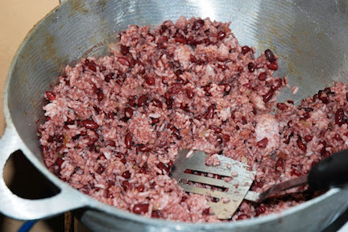

Many countries around the world pride themselves in their gastronomy. Each country's gastronomy displays such varities of foods that may be unique to that country. One country in specific, Nicaragua, incorporates their food so much into their culture.
Since early times, Nicaragua's traditional food has been greatly linked to corn. In today's time, the food is now more of a mix between indigenous and Spanish dishes and spices. Many of Nicaragua's famous meals include nacatamales, vaho, and gallo pinto. Nacatamales are similar to tamales but are instead composed of corn dough, pork, potatoes, rice, tomato, plantain leaves, etc. Vaho is another staple dish that consists of meat, green plantains, and yucca all cooked in plantain leaves. The especially famous traditional home dish is gallo pinto, which is a simple mix of rice and beans as well as some spices. At every typical Nicaraguan household you will almost always find homemade tortillas, beans, cuajada (famous kind of cheese in Central America), and hot black coffee.
Cuisine forms such an important part of Nicaragua's culture and history. All of the country natives use food as a way to meet new people, create memories within their families, and to simply indulge in the exotic flavors of a very beautiful country.
To know more about Nicaragua click here!
|

Gallo Pinto |
Nacatamal |
Vaho |